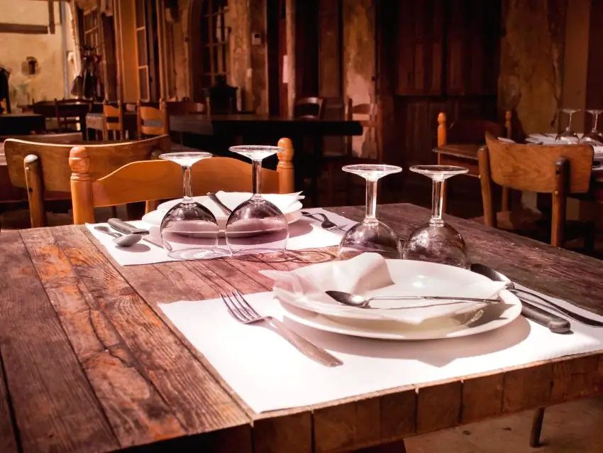
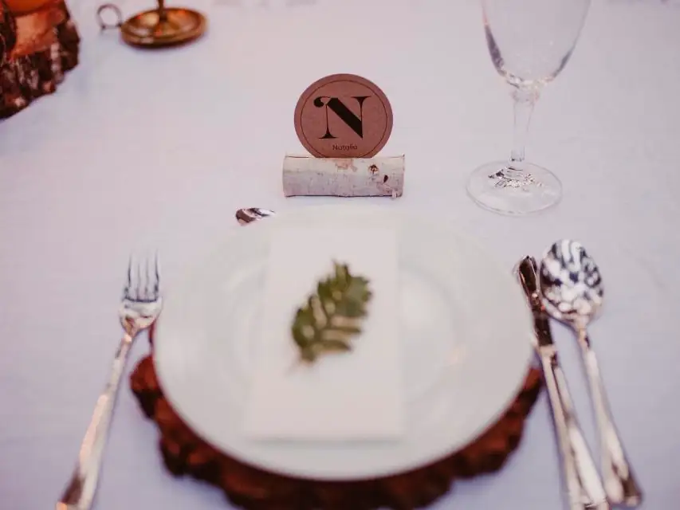
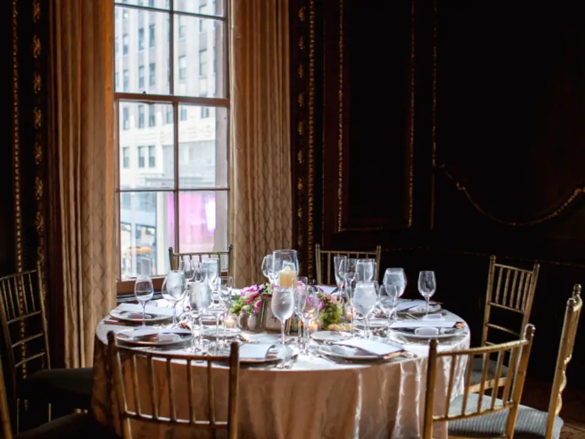
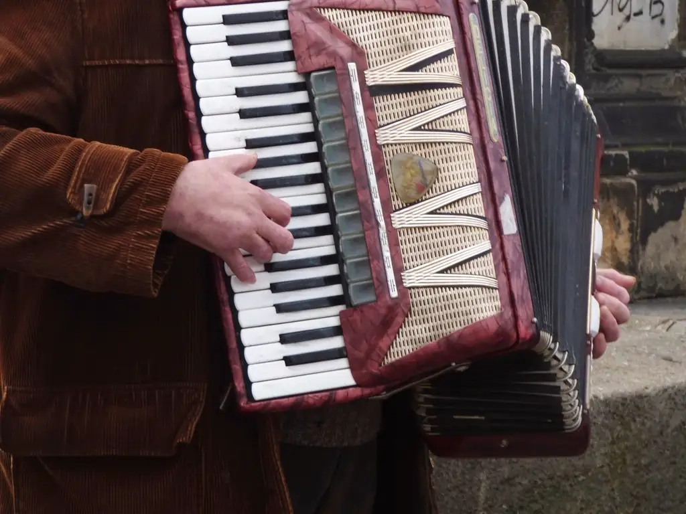
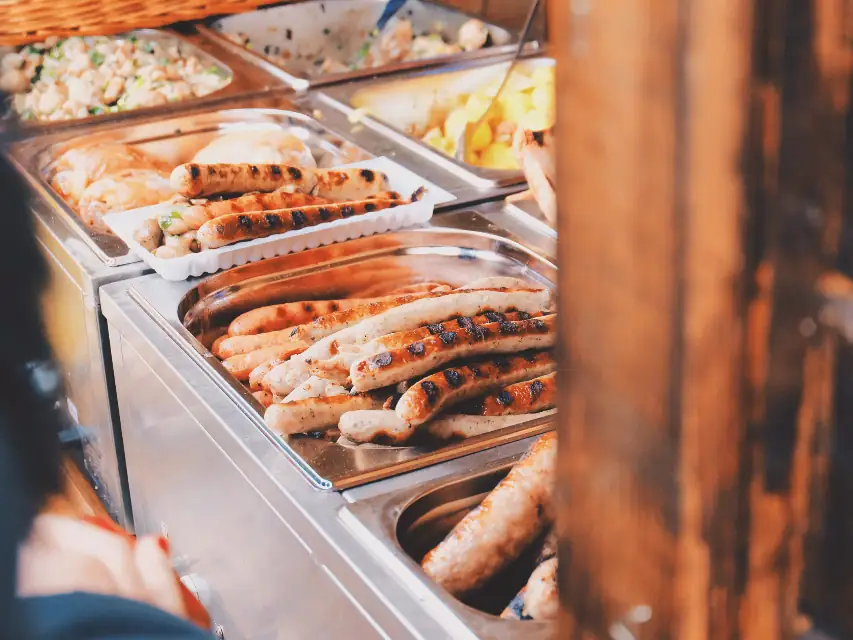
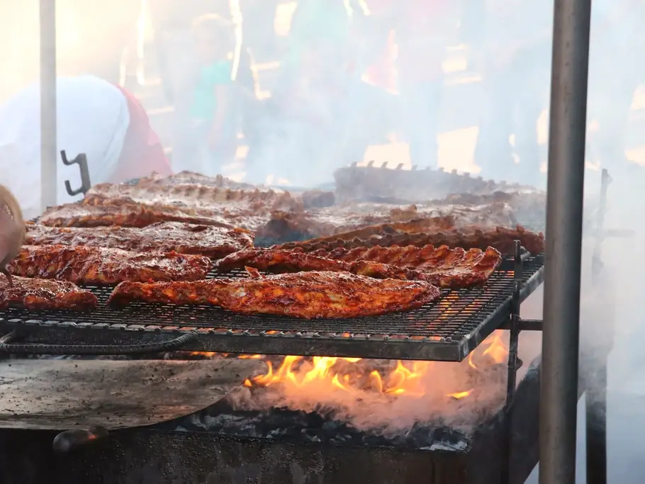

Славянская кухня · пр-т Победителей, 11
В «Трактиръ» — на славянский пир!
Настоящая русская печь в зале, драники «лучшие в городе» и живая музыка каждый вечер. Ежедневно с 12:00 до 00:00.

Блюда из печи, на вертеле и славянской жаровне.
Каждый вечер с 20:00 до 23:00.
2666 оценок и 1110 отзывов гостей.
Каждый день, есть бизнес-ланч.
Атмосфера
Расписание — по странице «Программа» на traktir.by.
Им встречают гостей, «заговорённый на счастье и любовь».
Каждый день с 12:00 до 17:00.
Живая музыка и певцы — каждый день с 20:00 до 23:00.
Каждый день в 20:45.
Сало на палках во дворе — ежедневно в 22:00.
Каждую пятницу в 21:00.
Каждую субботу в 21:00.
Провожаем рюмочкой фирменной наливочки и сушками.
Банкеты и торжества
Купеческая атмосфера, богатые столы и славянские традиции. Есть банкетный зал.

Банкетный залдни рождения, юбилеи, годовщины

по славянским обрядам

деловые встречи и встречи друзей
Банкеты заказывают в Вс–Чт с 12:00 до 18:00, предварительно позвонив по телефону +375 (29) 135-77-36.
С собой
Любимые блюда Трактира можно забрать с собой. Позвоните заранее — подскажем по меню и времени готовности.


О Трактире
Изба купеческая в самом сердце Минска: старинные рецепты, настоящая русская печь, блюда на вертеле и славянской жаровне. Гостей встречают купец Никанор да купчиха Павлина — чаем на семи травах, а провожают рюмочкой фирменной наливочки «на посошок» и сушками.
Здесь будут ваши фотографии зала, печи и праздников. Сейчас — стоковые иллюстрации.
Через форму на сайте или по телефону +375 (17) 203-69-91. Бронь столов на праздники — +375 (29) 135-77-36.
Позвоните заранее по телефону +375 (29) 135-77-36 и приходите обсудить детали в Вс–Чт с 12:00 до 18:00.
Да, обеды — каждый день с 12:00 до 17:00, есть бизнес-ланч.
Да, есть детское меню. Есть и постное меню.
Минск, проспект Победителей, 11 — рядом со станцией метро «Немига».
Выберите дату, время и число гостей. Администратор перезвонит и подтвердит бронь.
Это демонстрационная форма: заявка никуда не отправлена. В рабочей версии администратор перезвонит для подтверждения.
Адрес
Режим работы